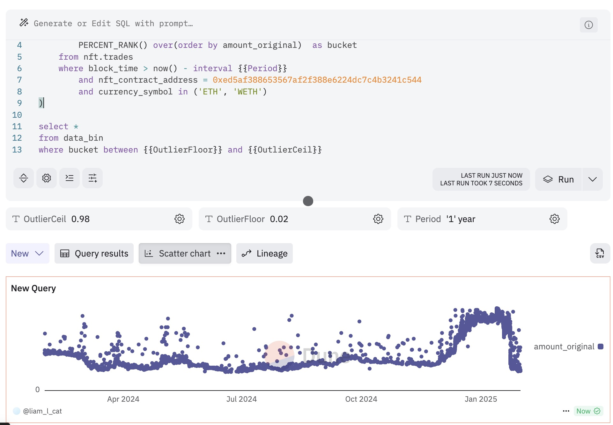

Chapter 7 NFT 数据分析
NFT（Non-Fungible Token，非同质化代币）是一种遵循 ERC-721 标准 的区块链资产，与传统的 ERC-20 标准 代币（同质化代币）不同，NFT 具备 不可分割、不可替代、独一无二 等特性，使其成为数字化唯一资产的理想载体。
NFT 在多个领域得到了广泛应用，包括但不限于：
- 数字艺术品/收藏品 🎨 —— 例如 Beeple 的 NFT 艺术作品，每件作品都是独一无二的链上资产。
- 游戏内物品 🎮 —— 例如《Axie Infinity》中的 Axie 宠物，每个角色都有独特的属性和价值。
- 域名 🌐 —— 例如 ENS（Ethereum Name Service） 域名，每个 NFT 代表一个唯一的去中心化域名。
- 活动门票/优惠券 🎟️ —— NFT 可作为演唱会门票、会员凭证，甚至是独家折扣券。
- 数字身份 🆔 —— 例如去中心化社交协议 Lens Protocol 的 Profile NFT，代表链上身份。
- 文章和内容 📜 —— 例如 Mirror 文章，用户可以通过 NFT 收藏、交易链上内容。
例如，在 数字艺术 领域，每个 NFT 代表一件独特的艺术作品，确保其唯一性；在 ENS 域名 体系中，每个 NFT 代表一个专属的区块链域名；而在 门票应用 中，每张 NFT 票都可对应特定的座位编号，确保票务的唯一性和真实性。
随着 NFT 生态的发展，除了 ERC-721 标准，还衍生出了多个新型 NFT 标准，以满足更复杂的应用需求：
- ERC-1155 🏷️ —— 半同质化代币，允许同一合约中同时存在 同质化（FT） 和 非同质化（NFT） 资产。例如，游戏道具既可以是 独一无二的装备，也可以是 批量发售的消耗品。
- SBT（Soulbound Token） 🔗 —— 灵魂绑定代币，即不可转让的 NFT，用于构建链上身份、成就证明或不可交易的凭证，如去中心化简历、证书等。
- ERC-3235 ⚖️ —— 支持结算的半同质化代币，在保留 NFT 独特性的同时，允许一定的批量交易和清算机制，提升 NFT 在金融场景中的可用性。
NFT 技术的不断演进，推动着 Web3 生态的多元化发展。无论是在 艺术、游戏、社交、金融 还是 数字身份 领域，NFT 正逐步成为区块链世界的重要基础设施，为用户提供更加自由、透明和可拥有的数字资产形态。 🚀
7.1 NFT 合约讲解
NFT相关的合约通常分为两类：一类是项目方的合约，二是用来交易NFT的第三方交易平台合约。
7.1.1 ERC721合约
我们以ERC721的NFT为例说明其合约特点，其它可自行根据需求再去深入了解，我们在NFT市场Opensea上以azuki这个NFT为例，说明合约都有哪些事件：
interface ERC721 {
/// @dev 当任何NFT的所有权更改时（不管哪种方式），就会触发此事件。
/// 包括在创建时（`from` == 0）和销毁时(`to` == 0), 合约创建时除外。
event Transfer(address indexed _from, address indexed _to, uint256 indexed _tokenId);
/// @dev 当更改或确认NFT的授权地址时触发。
/// 零地址表示没有授权的地址。
/// 发生 `Transfer` 事件时，同样表示该NFT的授权地址（如果有）被重置为“无”（零地址）。
event Approval(address indexed _owner, address indexed _approved, uint256 indexed _tokenId);
/// @dev 所有者启用或禁用操作员时触发。（操作员可管理所有者所持有的NFTs）
event ApprovalForAll(address indexed _owner, address indexed _operator, bool _approved);
/// @notice 将NFT的所有权从一个地址转移到另一个地址
/// @dev 如果`msg.sender` 不是当前的所有者（或授权者）抛出异常
/// 如果 `_from` 不是所有者、`_to` 是零地址、`_tokenId` 不是有效id 均抛出异常。
/// 当转移完成时，函数检查 `_to` 是否是合约，如果是，调用 `_to`的 `onERC721Received` 并且检查返回值是否是 `0x150b7a02` (即：`bytes4(keccak256("onERC721Received(address,address,uint256,bytes)"))`) 如果不是抛出异常。
/// @param _from ：当前的所有者
/// @param _to ：新的所有者
/// @param _tokenId ：要转移的token id.
/// @param data : 附加额外的参数（没有指定格式），传递给接收者。
function safeTransferFrom(address _from, address _to, uint256 _tokenId, bytes data) external payable;
/// @notice 转移所有权 -- 调用者负责确认`_to`是否有能力接收NFTs，否则可能永久丢失。
/// @dev 如果`msg.sender` 不是当前的所有者（或授权者、操作员）抛出异常
/// 如果 `_from` 不是所有者、`_to` 是零地址、`_tokenId` 不是有效id 均抛出异常。
function transferFrom(address _from, address _to, uint256 _tokenId) external payable;
/// @notice 更改或确认NFT的授权地址
/// @dev 零地址表示没有授权的地址。
/// 如果`msg.sender` 不是当前的所有者或操作员
/// @param _approved 新授权的控制者
/// @param _tokenId ： token id
function approve(address _approved, uint256 _tokenId) external payable;
/// @notice 启用或禁用第三方（操作员）管理 `msg.sender` 所有资产
/// @dev 触发 ApprovalForAll 事件，合约必须允许每个所有者可以有多个操作员。
/// @param _operator 要添加到授权操作员列表中的地址
/// @param _approved True 表示授权, false 表示撤销
function setApprovalForAll(address _operator, bool _approved) external;
}对于数据分析，上述函数中最重要的是Transfer这个event事件，在每笔交易时都会触发该事件并记录到链上，除了Transfer，还有Mint事件，一般用在项目发售时期用来铸造一个新的NFT。Dune的魔法表提供了ERC721，ERC1155类型的Transfer表，如erc721_ethereum.evt_Transfer，erc1155_ethereum.evt_Transfer等（不同区块链下名称不同），我们可以从中查询某个合约或者某个EOA地址的相关NFT传输事件。
在Transfer事件中，主要有三个参数发送方地址from, 接收方地址to和NFT的编号tokenId。交易的情况下，from和to都是一个正常的地址，如果是铸造mint那么from地址则全是0，如果是销毁burn则to的地址全是0，Dune上的nft.mint表和nft.burn表也是通过解析该event事件，得到最终的交易信息。
7.1.2 交易市场合约
在交易市场合约中，常见的有Opensea、X2Y2、Blur等，这里我们以Opensea的Seaport1.1合约为例说明，seaport合约的可写函数如下，和交易相关的函数都会触发OrderFulfilled这个event事件，从而将数据记录到链上，Dune上的nft.trades也是通过解析该event事件，得到最终的交易信息。

uint256 constant receivedItemsHash_ptr = 0x60;
/*
* Memory layout in _prepareBasicFulfillmentFromCalldata of
* data for OrderFulfilled
*
* event OrderFulfilled(
* bytes32 orderHash,
* address indexed offerer,
* address indexed zone,
* address fulfiller,
* SpentItem[] offer,
* > (itemType, token, id, amount)
* ReceivedItem[] consideration
* > (itemType, token, id, amount, recipient)
* )
*7.2 常用表说明
- 原始基础表：在Dune平台中位于Raw–>transactions和logs表中；
- 具体的项目表：在Dune平台中位于Decoded Projects–>搜索具体项目表名称，以及交易平台名称；
- 聚合表：
- Spells–>erc721: 记录erc721所有的transfer记录
- Spells–>nft: 包含了交易trade、铸造mint、转移transfer、手续费fee和销毁burns等信息，其中最重要的是trades表，它聚合了主流交易所的所有交易数据。
7.3 核心指标
7.3.1 成交价格走势
需要将所有交易市场的交易金额都查询出来，用散点图表达所有成交，同时可以通过时间范围选择不同的范围，比如最近24h，最近7天，最近1月等等。需要注意的是，对于一些成交价格过高的交易，需要把这些过滤掉，不然在散点图上就会挤压其它成交价格，无法凸显大多数的成交价格。
with data_bin as (
select block_time,
amount_original,
PERCENT_RANK() over(order by amount_original) as bucket
from nft.trades
where block_time > now() - interval {{Period}}
and nft_contract_address = 0xed5af388653567af2f388e6224dc7c4b3241c544
and currency_symbol in ('ETH', 'WETH')
)
select *
from data_bin
where bucket between {{OutlierFloor}} and {{OutlierCeil}}
7.3.2 地板价
因为我们只能获得链上已经成交的数据，无法获得交易市场的挂单数据，所以一般会用最近10笔交易中的最小成交金额来作为地板价，与挂单价格相差不大，除非特别冷门的项目:
-- 按时间排序，找出该合约最近的10笔交易
with lastest_trades as (
select *
from nft.trades
where nft_contract_address = 0xed5af388653567af2f388e6224dc7c4b3241c544 -- azuki NFT的合约地址
-- and block_time > now() - interval '24' hour --你也可以按时间排序
order by block_time desc
limit 10
)
select min(amount_original) as floor_price --直接获取最小值
-- percentile_cont(.05) within GROUP (order by amount_original) as floor_price --这么做是取最低和最高价之间5%分位数，防止一些过低的价格交易影响
from lastest_trades
where currency_symbol IN ('ETH', 'WETH')
and cast(number_of_items as integer) = 1 -- 这里可以按不同的链，不同的交易token进行过滤7.3.3 成交量、总成交额度、总交易笔数等、24小时/7天/1月成交额度
with total_volume as(
SELECT
sum(amount_original) as "Total Trade Volume(ETH)", --总成交量ETH
sum(amount_usd) as "Total Trade Volume(USD)", --总成交量USD
count(amount_original) as "Total Trade Tx" --总交易笔数
FROM nft.trades
WHERE nft_contract_address = 0xed5af388653567af2f388e6224dc7c4b3241c544
-- AND currency_symbol IN ('ETH', 'WETH')
),
total_fee as (
select
sum(royalty_fee_amount) as "Total Royalty Fee(ETH)", --总版权税ETH
sum(royalty_fee_amount_usd) as "Total Royalty Fee(USD)", --总版权税USD
sum(platform_fee_amount) as "Total Platform Fee(ETH)", --总平台抽成ETH
sum(platform_fee_amount_usd) as "Total Platform Fee(USD)" --总平台抽成USD
from nft.fees
WHERE nft_contract_address = 0xed5af388653567af2f388e6224dc7c4b3241c544
-- AND royalty_fee_currency_symbol IN ('ETH', 'WETH')
)
select * from total_volume, total_fee7.3.4 每日/每月/每周成交量
with hourly_trade_summary as (
select date_trunc('day', block_time) as block_date,
sum(number_of_items) as items_traded,
sum(amount_raw) / 1e18 as amount_raw_traded,
sum(amount_usd) as amount_usd_traded
from opensea.trades
where nft_contract_address = 0xed5af388653567af2f388e6224dc7c4b3241c544
-- and block_time > now() - interval '90' day
group by 1
order by 1
)
select block_date,
items_traded,
amount_raw_traded,
amount_usd_traded,
sum(items_traded) over (order by block_date asc) as accumulate_items_traded,
sum(amount_raw_traded) over (order by block_date asc) as accumulate_amount_raw_traded,
sum(amount_usd_traded) over (order by block_date asc) as accumulate_amount_usd_traded
from hourly_trade_summary
order by block_date
7.3.5 当前持有人数，总token数量，holder的分布等
with nft_trade_details as ( --获取交易的买入卖出方详细信息表，卖出方是负数，买入方是
select seller as trader,
-1 * cast(number_of_items as integer) as hold_item_count
from nft.trades
where nft_contract_address = 0xed5af388653567af2f388e6224dc7c4b3241c544
union all
select buyer as trader,
cast(number_of_items as integer) as hold_item_count
from nft.trades
where nft_contract_address = 0xed5af388653567af2f388e6224dc7c4b3241c544
),
nft_traders as (
select trader,
sum(hold_item_count) as hold_item_count
from nft_trade_details
group by trader
having sum(hold_item_count) > 0
order by 2 desc
),
nft_traders_summary as (
select (case when hold_item_count >= 100 then 'Hold >= 100 NFT'
when hold_item_count >= 20 and hold_item_count < 100 then 'Hold 20 - 100'
when hold_item_count >= 10 and hold_item_count < 20 then 'Hold 10 - 20'
when hold_item_count >= 3 and hold_item_count < 10 then 'Hold 3 - 10'
else 'Hold 1 or 2 NFT'
end) as hold_count_type,
count(*) as holders_count
from nft_traders
group by 1
order by 2 desc
),
total_traders_count as (
select count(*) as total_holders_count,
max(hold_item_count) as max_hold_item_count
from nft_traders
),
total_summary as (
select
0 as total_nft_count,
count(*) as transaction_count,
sum(number_of_items) as number_of_items_traded,
sum(amount_raw) / 1e18 as eth_amount_traded,
sum(amount_usd) as usd_amount_traded
from opensea.trades
where nft_contract_address = 0xed5af388653567af2f388e6224dc7c4b3241c544
)
select *
from nft_traders_summary
join total_traders_count on true
join total_summary on true